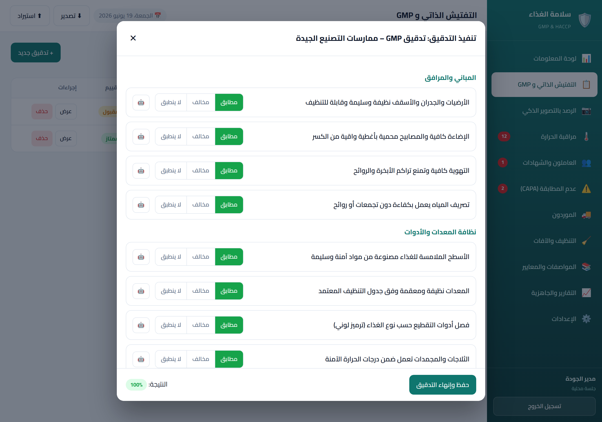
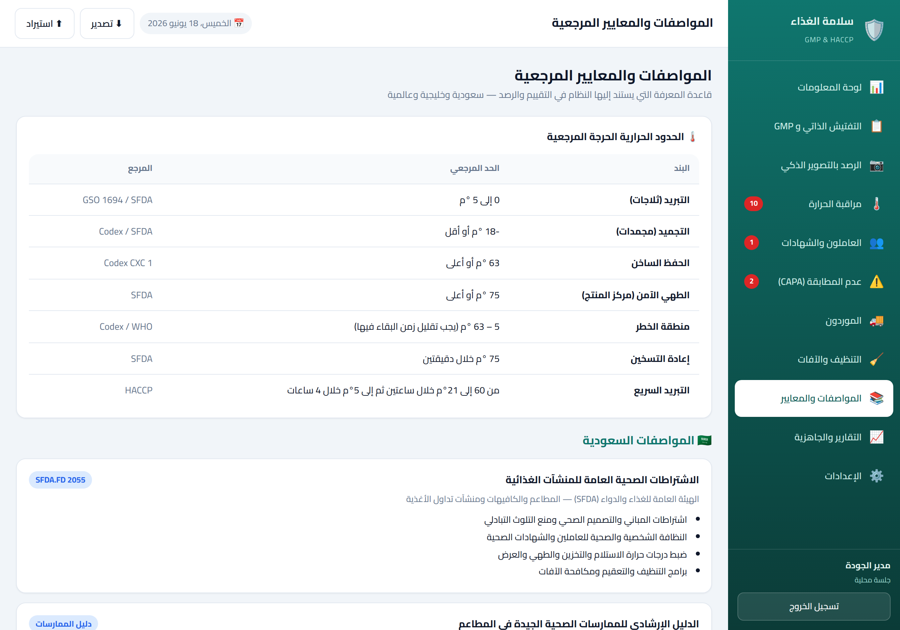

تفتيش يساعد المطاعم، الكافيهات، المطابخ المركزية، وسلاسل الفروع على إدارة سلامة الغذاء يومياً من خلال التفتيش الذاتي، التوثيق الرقمي، الإجراءات التصحيحية، سجلات الحرارة، الشهادات، والتنبيهات الذكية — لرفع الجاهزية الرقابية وتقليل المخالفات المتكررة.

تفتيش يجمع قوائم التفتيش، توثيق المخالفات، الإجراءات التصحيحية، متابعة الشهادات، سجلات الحرارة، مكافحة الآفات، التنظيف، الموردين، وتقارير الجاهزية في منصة واحدة — تساعد الإدارة على رؤية حالة كل فرع بشكل يومي.
قوائم تدقيق جاهزة لكل قطاع مع احتساب النتيجة وتوثيق كل بند بشكل رقمي قابل للمراجعة.
دورة كاملة من المخالفة إلى الإغلاق: سبب جذري، إجراء تصحيحي، إجراء وقائي، تحقق من الإغلاق.
مؤشرات أداء واضحة لكل فرع، قابلة للطباعة والمشاركة، لدعم قرارات الإدارة.
تنبيهات مسبقة لانتهاء الشهادات، تجاوزات الحرارة، المهام المتأخرة، والإجراءات غير المغلقة.
سواء أدرت مطعماً عائلياً أو شبكة كافيهات أو مصنعاً غذائياً، النظام يتكيف مع قطاعك ومتطلباته.
قوائم GMP يومية وتفتيش ذاتي ومتابعة شهادات العاملين.
قوائم تدقيق متخصصة: المشروبات، التخزين البارد، مسببات الحساسية.
من العجن حتى التغليف — بنود إدارة مسببات الحساسية والخبيز.
دعم تطبيق مبادئ HACCP، تتبّع الدفعات، وسجلات الإنتاج.
إدارة فروع متعددة، تقارير موحّدة، ومقارنة أداء الفروع.
القيمة الأعلى لتفتيش تظهر عندما تكون لديك أكثر من نقطة تشغيل، أكثر من مشرف، وأكثر من سجل يجب متابعته يومياً.
من 3 إلى 30 فرعاً — كل فرع بسجلاته المستقلة وتقاريره الخاصة.
متابعة نقاط الخطر الحرجة من الاستلام والتحضير حتى التوزيع للفروع.
سجلات دفعات، تتبع المواد الخام، وإجراءات الاسترجاع السريع.
دعم تطبيق مبادئ HACCP والتتبع الكامل من المورد إلى المستهلك.
سجلات حرارة مستمرة، تنبيهات التجاوز، وتوثيق استلام وتسليم البضاعة.
إذا كانت منشأتك تعتمد على الورق أو Excel أو الواتساب — تفتيش يحول هذه العملية إلى نظام يومي قابل للقياس والإثبات.
لا تثبيت معقد، لا بنية تحتية — ابدأ مباشرة من المتصفح على أي جهاز.
أدخل بيانات المنشأة، أضف الفروع، وسجّل العاملين وشهاداتهم الصحية.
حدّد الفرع الحالي من شريط العنوان، ثم سجّل الحرارة ونفّذ التفتيش.
كل مخالفة تُوثَّق بسبب جذري وإجراء تصحيحي ووقائي حتى الإغلاق الموثق.
تقرير يومي وشهري بالوضع الحالي — مؤشرات واضحة للإدارة والفريق.
وحدات متكاملة تغطّي دورة سلامة الغذاء من الاستلام حتى التقديم.
قوائم تدقيق جاهزة مع احتساب النتيجة وإنشاء حالات عدم مطابقة مرتبطة بالبنود.
سجل نقاط التحكم الحرجة بالحدود والمراقبة والتحقق، وشجرة قرار Codex لتحديد النقاط.
تتبّع كل دفعة من الاستلام حتى التقديم، مع تقرير استدعاء جاهز للطباعة عند الحاجة.
تسجيل حرارة الثلاجات والمجمدات والطهي مع رصد التجاوزات وتنبيه المسؤول.
صوّر الموقع ليقترح الذكاء الاصطناعي تصنيف المخالفات — مع بقاء الاعتماد النهائي للمستخدم.
يقترح الذكاء الاصطناعي تقييم الالتزام باشتراطات النظافة بندًا ببند للمراجعة البشرية.
قيمة غذائية تقديرية من مكوّنات الوصفة أو وصف نصّي، مع رصد مسببات الحساسية.
توثيق الإفصاح، منع التلوث التبادلي، وإدارة مسببات الحساسية وفق المراجع السعودية والخليجية ذات العلاقة.
قوائم GMP مصمّمة خصيصًا لكل قطاع: عجن وخبيز للمخابز، مشروبات وعزل للكافيهات.
سجّل جميع فروعك وحدّد الفرع الحالي — كل سجل يُربط تلقائيًا بالفرع الصحيح.
متابعة صلاحية شهادات العاملين والتدريب مع تنبيهات قبل موعد الانتهاء.
دورة كاملة من التوثيق إلى الإغلاق: سبب جذري، إجراء تصحيحي ووقائي، تحقق من التطبيق.
متابعة صلاحية تراخيص الموردين وتقييمهم الدوري وتوثيق عمليات الاستلام.
جدول دوري للتنظيف والتعقيم وسجل زيارات شركات مكافحة الآفات.
قائمة تحقق شاملة قبل التفتيش ومؤشرات أداء للإدارة قابلة للطباعة.

يقترح تفتيش تصنيف المخالفات ومستوى الخطورة بناءً على الصور والمدخلات، لكنه لا يصدر حكماً نهائياً ولا يمنح اعتماداً رسمياً. كل نتيجة يمكن مراجعتها، تعديلها، اعتمادها، أو رفضها من قبل المستخدم المخول.
عند توقع زيارة رقابية أو مراجعة داخلية، يساعدك تفتيش على توليد قائمة أولويات واضحة:
هذه الميزة تساعد في تنظيم الأولويات وترفع مستوى التوثيق — ولا تضمن نتيجة الزيارة الرقابية.

وحدات يطلبها فريق الجودة والمدققون يومياً.
وثّق نقاط التحكم الحرجة بالحدود والمراقبة والتحقق، مع شجرة قرار Codex التفاعلية.
تتبّع كل دفعة من الاستلام حتى التقديم — مع تقرير استدعاء قابل للطباعة.
قيمة غذائية تقديرية لأي وصفة من مكوّناتها، مع رصد مسببات الحساسية.
قوائم GMP مصمّمة خصيصًا لكل قطاع مع بنود مسببات الحساسية وإجراءات الخبيز.
شريحة "الفرع الحالي" في شريط العنوان — يختارها المفتش قبل بدء الجولة وكل سجل يُطبع عليه الفرع تلقائيًا.
مصمم لدعم مواءمة ممارسات سلامة الغذاء مع مبادئ HACCP وGHP/GMP ومتطلبات التوثيق والتتبع والإجراءات التصحيحية ذات العلاقة بالسوق السعودي والخليجي. القوائم والحدود قابلة للتخصيص حسب آخر إصدار رسمي.
⚠️ تفتيش ليس جهة رقابية ولا يمنح شهادة اعتماد. يُنصح بمراجعة متطلبات الجهة الرقابية المختصة بشكل دوري.

نؤمن بالشفافية — إليك ما يجب أن تعرفه قبل البدء.
تفتيش أداة مساعدة للمنشأة ولا يغني عن الخبرة المهنية لمسؤول سلامة الغذاء أو الاستشارة المتخصصة.
النظام ليس جهة اعتماد ولا يُصدر شهادات رسمية. مسؤولية الحصول على الاعتمادات الرسمية تقع على المنشأة.
لا يمكن لأي نظام ضمان نتيجة زيارة رقابية. تفتيش يرفع مستوى التوثيق والجاهزية — والنتيجة تعتمد على التطبيق الفعلي.
يكمل النظام عمل الفريق الميداني ولا يحل محله. التدريب المستمر والمراجعة الدورية ضروريان دائماً.
تفتيش يرفع مستوى السيطرة والتوثيق والمتابعة، لكنه يعمل كأداة مساعدة للمنشأة وليس بديلاً عن الالتزام النظامي أو الخبرة المهنية.

تطبيق ويب قابل للتثبيت (PWA) يعمل في صالة المطعم والمطبخ والمستودع — وتُحفظ بياناتك على جهازك.
صُمم من منظور مسؤول الجودة الميداني — لا المطور أو المدير فقط.
كل إجراء موثّق برقم مرجع وتاريخ ومستخدم — سجل قابل للمراجعة في أي وقت.
ليس مجرد تسجيل المخالفة — بل متابعة الإجراء التصحيحي حتى الإغلاق الموثق.
قوالب تفتيش قابلة للتعديل لتناسب قطاعك ومتطلباتك الخاصة.
رؤية موحّدة للمنشأة كلها مع إمكانية التعمق في أداء كل فرع على حدة.
شفافية كاملة حول دور النظام — أداة مساعدة، وليس جهة اعتماد أو ضمان اجتياز.
ابدأ بتقييم مجاني لمستوى جاهزيتك الحالي — لا تثبيت، لا بطاقة ائتمانية.
سنراجع احتياج منشأتك ونجهز عرضاً تجريبياً يناسب قطاعك وعدد فروعك.
ابدأ بفرع واحد وتوسّع وقتما تشاء. جميع الخطط تتضمن نسخة تجريبية مجانية.
للمطاعم والكافيهات الصغيرة — حتى 3 فروع
للسلاسل الصغيرة والمتوسطة — حتى 10 فروع
للمطابخ المركزية وسلاسل الفروع الكبيرة
💡 ملاحظة: الأسعار قابلة للتعديل حسب عدد الفروع، حجم العمليات، ومستوى التخصيص المطلوب. خطة Business تتضمن رسوم إعداد وتهيئة أولية تبدأ من 5,000 ريال حسب نطاق المشروع.
الأمثلة أدناه توضيحية لسيناريوهات استخدام نموذجية — وليست شهادات عملاء فعلية، ولا تمثل نتائج مضمونة.
«توثيق كل مخالفة بإجراء تصحيحي ووقائي حتى الإغلاق يرفع مستوى متابعة الجودة بشكل واضح.»سيناريو: مدير جودة — سلسلة كافيهات
«ميزة التصوير والمساعد الذكي تساعد في اقتراح التصنيف الأولي للمخالفات وتوفير وقت الجولات الميدانية.»سيناريو: مشرف سلامة غذاء — مطعم
«إدارة الفروع المتعددة تُمكّن من رؤية مقارنة أداء كل فرع والتركيز على الأولويات.»سيناريو: مدير عمليات — سلسلة مطاعم
لا. تفتيش أداة رقمية تساعد المنشأة على التوثيق، المتابعة، ورفع الجاهزية، ولا يمثل اعتماداً رسمياً من أي جهة رقابية. مسؤولية الحصول على الاعتمادات والتراخيص الرسمية تقع على المنشأة ومسؤول سلامة الغذاء لديها.
لا يمكن لأي نظام ضمان ذلك. تفتيش يساعد على تحسين التوثيق، تقليل المخاطر، ورفع الجاهزية من خلال سجلات وإجراءات منظمة. نتيجة أي زيارة رقابية تعتمد على التطبيق الفعلي في المنشأة.
لا. الذكاء الاصطناعي يقترح فقط — تصنيف المخالفة، مستوى الخطورة، السبب الجذري، والإجراء التصحيحي المناسب. الاعتماد النهائي يبقى للمستخدم المخول (مسؤول الجودة أو المشرف). كل اقتراح يمكن مراجعته، تعديله، أو رفضه.
نعم، يمكن استخدامه بفرع واحد. لكنه يعطي قيمة أعلى بكثير للمنشآت متعددة الفروع والمطابخ المركزية حيث تبرز الحاجة لمقارنة الأداء، التوثيق الموحّد، وإدارة فرق متعددة.
نعم، يمكن تخصيص قوالب التفتيش حسب نوع النشاط والفروع ومستوى المخاطر. النظام يأتي بقوالب جاهزة للمطاعم، الكافيهات، المخابز، والمصانع، وهي قابلة للتعديل والإضافة.
النظام مصمم لدعم مواءمة ممارسات سلامة الغذاء مع المراجع السعودية والخليجية والدولية ذات العلاقة. يُنصح دائماً بمراجعة آخر إصدار من متطلبات الجهة الرقابية المختصة، إذ قد تتغير الاشتراطات.
نعم، يدعم النظام إدارة الفروع المتعددة. سجّل كل فروعك، وحدّد الفرع الحالي من شريط العنوان — كل تفتيش وسجل حراري ومخالفة يُربط تلقائيًا بالفرع الصحيح، مع إمكانية التصفية والمقارنة.
يمكن دعم العمل دون اتصال في معظم الوظائف الأساسية (تسجيل الحرارة، التفتيش، CAPA) مع مزامنة لاحقة عند توفر الاتصال إذا تم تفعيل النسخة السحابية. ميزات الذكاء الاصطناعي تتطلب اتصالًا بالإنترنت.
في النسخة التجريبية تُخزّن البيانات محليًا على جهازك ويمكن تصدير نسخة احتياطية JSON. النسخة السحابية (SaaS) تستخدم Supabase مع تشفير كامل. للمزيد راجع سياسة الخصوصية.
تفتيش ليس جهة رقابية، ولا يمنح شهادة اعتماد، ولا يضمن اجتياز التفتيش أو عدم وجود مخالفات.
النظام مصمم لمساعدة المنشآت الغذائية على تحسين التوثيق، متابعة الإجراءات التصحيحية، رفع الجاهزية، وتقليل المخاطر التشغيلية من خلال أدوات رقمية منظمة.
تبقى مسؤولية الامتثال النهائي على المنشأة ومسؤول سلامة الغذاء لديها.
للمزيد: سياسة الخصوصية · شروط الاستخدام
نسخة تجريبية كاملة فورًا، أو عرض توضيحي مخصّص لمنشأتك.